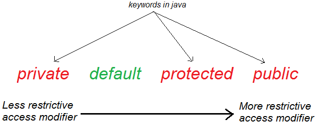

Access Modifiers or Visibility Controls These are also Called as Access Visibility Controls means they defined where a method and Data Member of class will be used either inside a class ,outside a class ,in inherited class or in main Method They Tells us the Scope of Methods where they would be used Various types of Access Modifiers are as follows:- 1) Public Access: - Public Access modifiers Specifies that data Members and Member Functions those are declared as public will be visible in entire class in which they are defined. Public Modifier is used when we wants to use the method any where either in the class or from outside the class. 2) Protected Access:- The Methods those are declared as Protected Access modifiers are Accessible to Only in the Sub Classes but not in the Main Program , This is the Most important Access Modifiers which is used for Making a Data or Member Function as he may only be Accessible to a Class which derives it but it doesn’t allows a user to Access the data which is declared as outside from Program Means Methods those are Declared as Protected are Never be Accessible to Another Class The Protected will be Accessible to Only Sub Class and but not in your Main Program. 3) Private Access:- The Methods or variables those are declared as private Access modifiers are not would be not Accessed outside from the class or in inherited Class or the Subclass will not be able to use the Methods those are declared as Private they are Visible only in same class where they are declared. By default all the Data Members and Member Functions is Private, if we never specifies any Access Modifier in front of the Member and Data Members Functions.
Example Class Student has private fields as student number and name.The method display() in class Student displays as student number and name. Use constructor to assign values. Write a java program to set and display values of one student.
Example Class Employee has protected fields number and name.Class laborer has a private field number of ot hours. The class also have a public method set() which set number, name and ot hours and a method show() which displays number and name of a laborer. Write a java program to set and display data of a laborer.
